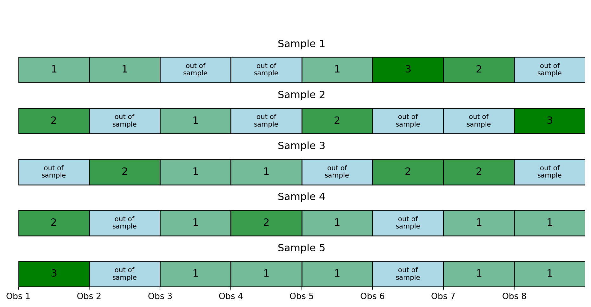

Introduction to Statistical Learning
Model Selection - Part B - Class 6
Giora Simchoni
gsimchoni@gmail.com and add #intro2sl in subject
Stat. and OR Department, TAU
The Bootstrap
Previously on Model Selection
- Model Selection: select between a set of models (e.g. one with 5 parameters and the other with 6 parameters) the one with lowest error
- Model Assessment: know how accurate the model would be, estimate the error itself
How to estimate prediction error?
- Data splitting: Train-Validation-Test
- Cross Validation
- The Bootstrap
- Training error + Optimism
The Bootstrap
The Bootstrap
- Ideally, how would we estimate \(Err = \mathbb{E}_{x_0, y_0, T}(L(y_0, \hat{f}(x_0)))\)?
Draw \(B\) samples of size \(n + m\) from \(F_{X, Y}\), fit our models on \(n\), test on \(m\)… \(\to\) impractical.
Instead, the Bootstrap emulates this process (not just for estimating \(Err\)):
- Randomly select with replacement \(B\) samples, each of size \(n\)
- Fit model(s) on \(n\) observations in sample \(b\), get \(\hat{f}^{*b}\)
- Test on out-of-sample observations
- An option (LOO Bootstrap): \[\widehat{Err}^{(1)} = \frac{1}{n}\sum_{i = 1}^{n} \frac{1}{|C^{-i}|}\sum_{b \in C^{-i}} L(y_i, \hat{f}^{*b}(x_i))\]
Correction for overestimation of \(Err\)
How many observations out of \(n\) would we see in sample \(b\)?
\(\begin{aligned} P(\text{observation } i \in \text{bootstrap sample } b) &= 1 - P(\text{observation } i \not\in \text{bootstrap sample } b) \\ &= 1 - \left(1 - \frac{1}{n}\right)^n \\ &\approx 1 - e^{-1} \\ &= 0.632 \end{aligned}\)
- The Bootstrap takes us back to “low \(K\)” issues in CV
- Possible correction: \[\widehat{Err}^{(.632)} = 0.368 \cdot \overline{err} + 0.632 \cdot \widehat{Err}^{(1)}\]
What does Bootstrap error estimate?
Training Error + Optimism
Why optimism?
- Traditionally, \(n\) is not large
- Natural to ask: by how much is \(\overline{err} = \frac{1}{n}\sum_{i=1}^{n} L(y_i, \hat{f}(x_i))\) optimistic?
Optimism
- We said ideally we would like to estimate:
- \(Err_T = \mathbb{E}_{x_0, y_0}\left[L(y_0, \hat{f}(x_0))|T\right]\)
- \(Err = \mathbb{E}_T\left[Err_T\right] = \mathbb{E}_{x_0, y_0, T}\left[L(y_0, \hat{f}(x_0))\right]\)
- Optimism is defined for a Fixed \(X\) scenario, for “in-sample prediction error”:
- \(Err_{in} = \frac{1}{n}\sum_{i=1}^n\mathbb{E}_{y_0}\left[L(y_0, \hat{f}(x_i))|T\right]\)
- That is, on the same \(X\) points of the training set
- \(op = \mathbb{E}_{y}\left[Err_{in} - \overline{err}|X\right]\)
- With squared error: \(op = \mathbb{E}_{y, y_0}\left[\frac{1}{n}\|y_0 - \hat{y}\|^2 - \frac{1}{n}\|y - \hat{y}\|^2|X\right]\)
- Final estimation for in-sample prediction error: \(\overline{err} + \widehat{op}\)
Optimism: End Goal
Decomposing in-sample prediction error
\(\mathbb{E}_{y, y_0}\|y_0 - \hat{y}\|^2 = \mathbb{E} \left|\left| \underbrace{y_0 - \mathbb{E}(y)}_{A} + \underbrace{\mathbb{E}(y) - \mathbb{E} (\hat{y})}_{B} + \underbrace{\mathbb{E} (\hat{y}) - \hat{y}}_{C}\right|\right|^2\)
\(= \mathbb{E}\|y_0 - \mathbb{E}(y)\|^2 + \mathbb{E}\|\mathbb{E}(y) - \mathbb{E} (\hat{y})\|^2 + \mathbb{E}\|\mathbb{E} (\hat{y}) - \hat{y}\|^2 +2\mathbb{E}(A^TB) + 2\mathbb{E}(A^TC) + 2\mathbb{E}(B^TC)\)
\(= \text{irreducible error} + \text{bias}^2 + \text{variance}\)
Important: \(\mathbb{E}(y_0) = \mathbb{E}(y) = f(x)\)
\(2\mathbb{E}(A^TB) = 2\mathbb{E}(B^TA) = 2B^T\mathbb{E}A = 2B^T\mathbb{E}\left[y_0 - \mathbb{E}(y)\right] = 2B^T\mathbf{0} = 0\)
\(2\mathbb{E}(B^TC) = 2B^T\mathbb{E}C = 2B^T\mathbb{E}\left[\mathbb{E} (\hat{y}) - \hat{y}\right] = 2B^T\mathbf{0} = 0\)
\(2\mathbb{E}(A^TC) = 2\mathbb{E}\left[\left[y_0 - \mathbb{E}(y)\right]^T\left[\mathbb{E} (\hat{y}) - \hat{y}\right]\right] = 2\mathbb{E}(A)^T\mathbb{E}(C) = 0\)
Decomposing training error
\(\mathbb{E}_{y, y_0}\|y - \hat{y}\|^2 = \mathbb{E} \left|\left| \underbrace{y - \mathbb{E}(y)}_{A} + \underbrace{\mathbb{E}(y) - \mathbb{E} (\hat{y})}_{B} + \underbrace{\mathbb{E} (\hat{y}) - \hat{y}}_{C}\right|\right|^2\)
\(= \mathbb{E}\|y - \mathbb{E}(y)\|^2 + \mathbb{E}\|\mathbb{E}(y) - \mathbb{E} (\hat{y})\|^2 + \mathbb{E}\|\mathbb{E} (\hat{y}) - \hat{y}\|^2 +2\mathbb{E}(A^TB) + 2\mathbb{E}(A^TC) + 2\mathbb{E}(B^TC)\)
\(= \text{irreducible error} + \text{bias}^2 + \text{variance} - 2\sum_{i=1}^{n}Cov(y_i, \hat{y}_i)\)
\(2\mathbb{E}(A^TB) = 2\mathbb{E}(B^TA) = 2B^T\mathbb{E}A = 2B^T\mathbb{E}\left[y - \mathbb{E}(y)\right] = 2B^T\mathbf{0} = 0\)
\(2\mathbb{E}(B^TC) = 2B^T\mathbb{E}C = 2B^T\mathbb{E}\left[\mathbb{E} (\hat{y}) - \hat{y}\right] = 2B^T\mathbf{0} = 0\)
\(2\mathbb{E}(A^TC) = 2\mathbb{E}\left[\left[y - \mathbb{E}(y)\right]^T\left[\mathbb{E} (\hat{y}) - \hat{y}\right]\right] = -2\mathbb{E}\left[\left[y - \mathbb{E}(y)\right]^T\left[\hat{y} - \mathbb{E} (\hat{y})\right]\right] = -2\sum_{i=1}^{n}Cov(y_i, \hat{y}_i)\)
Back to optimism
\[op = \frac{1}{n}\left(\mathbb{E}_{y, y_0}\|y_0 - \hat{y}\|^2 - \mathbb{E}_{y, y_0}\|y - \hat{y}\|^2\right) = \frac{2}{n}\sum_{i=1}^{n}Cov(y_i, \hat{y}_i)\]
- This in itself is already interesting! When is \(op\) high/low?
- \(\mathbb{E}_{y}\left[Err_{in}\right] = \mathbb{E}_{y}\left[\overline{err}\right] + \frac{2}{n}\sum_{i=1}^{n}Cov(y_i, \hat{y}_i)\)
- An obvious estimate for in-sample prediction error: \[\widehat{Err}_{in} = \overline{err} + \frac{2}{n}\sum_{i=1}^{n}\widehat{Cov}(y_i, \hat{y}_i)\]
In-sample Prediction Error Criteria
Mallow’s \(C_p\)
- We wish to estimate \(op = \frac{2}{n}\sum_{i=1}^{n}Cov(y_i, \hat{y}_i)\)
- This means we want the trace of: \[Cov(y, \hat{y}) = \begin{pmatrix} Cov(y_1, \hat{y}_1) & Cov(y_1, \hat{y}_2) & \dots & Cov(y_1, \hat{y}_n) \\ Cov(y_2, \hat{y}_1) & Cov(y_2, \hat{y}_2) & \dots & Cov(y_2, \hat{y}_n) \\ \vdots & \vdots & \ddots & \vdots \\ Cov(y_n, \hat{y}_1) & Cov(y_n, \hat{y}_2) & \dots & Cov(y_n, \hat{y}_n) \\ \end{pmatrix}\]
- Mark \(\hat{y} = X\hat{\beta} = X(X^TX)^{-1}X^Ty = Hy\)
- More compactly: \[op = \frac{2}{n}\text{Tr}\left[Cov(y, \hat{y})\right] = \frac{2}{n}\text{Tr}\left[Cov(y, Hy)\right] = \frac{2}{n}\text{Tr}\left[H Cov(y, y)\right] = \frac{2\sigma^2}{n}\text{Tr}\left[H \cdot I_n\right]\]
\(\widehat{op}\) in linear regression
- From the fact that \(\text{Tr}(AB) = \text{Tr}(BA)\): \[\text{Tr}(H) = \text{Tr}(X(X^TX)^{-1}X^T) = \text{Tr}(X^TX(X^TX)^{-1}) = \text{Tr}(I_{p + 1}) = p + 1\]
- To generalize, if \(d\) is the number of features in \(X\): \(\text{Tr}(H) = d\)
- \(op = \frac{2d\sigma^2}{n}\) in linear regression
- Mallow’s \(C_p\): \[C_p = \overline{err} + \frac{2d\hat{\sigma}^2}{n}\] where \(\hat{\sigma}^2\) obtained from the mean squared error of a low-bias model
What affects optimism?
\(C_p\) demo

AIC
- For squared error loss: \(\mathbb{E}_{y}\left[Err_{in}\right] = \mathbb{E}_{y}\left[\overline{err}\right] + \frac{2d\sigma^2}{n}\)
- For (negative) log-likelihood loss: \(-2 \cdot\mathbb{E}_{y}\left[\log\text{Pr}(y)\right] \approx -\frac{2}{n}\cdot E_{y}\left[\ell(\hat{\theta})\right] + \frac{2d}{n}\)
- Akaike information criterion (AIC): \[AIC = -\frac{2}{n}\cdot \ell(\hat{\theta}) + \frac{2d}{n}\]
- Advantage: for any likelihood model (e.g. logistic regression)
- For linear regression (Gaussian likelihood): \[AIC = -\frac{2}{n}\left[-\frac{n}{2}\ln(2\pi\sigma^2)-\frac{1}{2\sigma^2}RSS\right] + \frac{2d}{n} = C(\sigma^2) + \frac{\overline{err}}{\sigma^2} + \frac{2d}{n} = C(\sigma^2) + \frac{C_p}{\sigma^2}\]